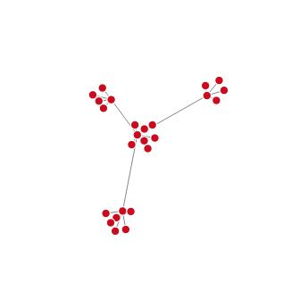
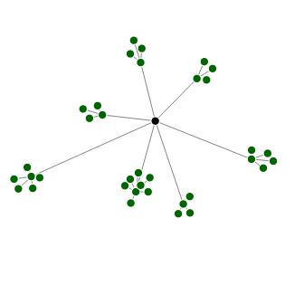
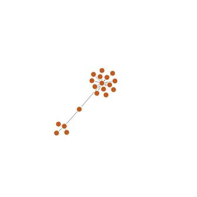
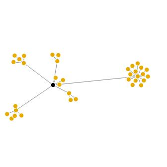

VariCat Ontology Visualization
To learn how to navigate this site and interpret these visualizations, please visit "Website Guide" for further info.
Complete Ontology


Metadata
Demographics
Clinical characteristics
Course of BD illness - symptoms
Course of BD illness - episodes

Course of non-BD psychiatric illness
Family history
Current illness severity
Course of treatment
Current pharmacological treatment
Lifetime pharmacological treatment
Non-pharmacological treatment
Clinical trial-specific variables
Trauma/stress
Positive psychological factors

[Nodes will be displayed if it exist for a given dataset]
Physical health
Cognitive
Physiological
Ecological momentary assessment
Miscellaneous